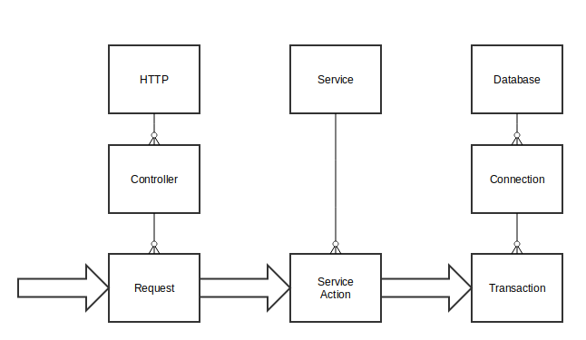

Страничка курса: https://maxcom.github.io/scala-course-2020/
Пересекли экватор - половина курса пройдена
Модель акторов - 1973 год,
использовалась как модель для описания параллельных систем.
Позже стала применяться в качестве базы для практических реализаций.
Популярность модель получила благодаря Erlang:
функциональному языку программирования и платформе,
разработанной Ericsson (1987 г.)
Дальше будем говорить про реализацию модели в библиотеке Akka.
Подключаем в проект: build.sbt
libraryDependencies +=
"com.typesafe.akka" %% "akka-actor-typed" % "2.6.3"
libraryDependencies += // или другой backend Slf4j
"ch.qos.logback" % "logback-classic" % "1.2.3"
в Play! зависимость уже и так есть
Два варианта API:
Правильные import'ы:
import akka.actor.typed.scaladsl.Behaviors
import akka.actor.typed.{ActorRef, Behavior}
Разделяемое изменяемое состояние + параллелизм = проблемы
Разделяемое изменяемое состояние + параллелизм =
«Share nothing» архитектура
Актор — асинхронный объект
| Объект | Актор | |
|---|---|---|
| Вызов | counter.incr(n) | counter ! Incr(n) counter.tell(Incr(n)) |
| Запрос | counter.get() ⇒ Int |
counter ? Get counter.ask(Get) ⇒ Future[Int] |
В ООП логика моделируется взаимодействием объектов.
В модели акторов - взаимодействием акторов путем обмена сообщениями.
В ООП методы можно вызывать из разных потоков.
Потокобезопасность?
У актора обработка сообщений строго последовательна.
Акторы работают независимо в разных потоках.
Общение двух акторов последовательно
(очередь не
перемешивается).
Пример: актор счетчика
object Counter {
trait Protocol
case class Incr(n: Long) extends Protocol
case class Get(replyto: ActorRef[Long]) extends Protocol
def behavior: Behavior[Protocol] = ???
}
Актор с изменяемым состоянием
def behavior: Behavior[Protocol] = Behaviors.setup { ctx =>
var value: Long = 0
Behaviors.receiveMessage {
case Incr(n) =>
value += n
Behaviors.same
case Get(replyto) =>
replyto ! value
Behaviors.same
}
}
"Immutable" актор
private def counter(value: Long): Behavior[Protocol] =
Behaviors.receiveMessage {
case Incr(n) =>
counter(value + n)
case Get(replyto) =>
replyto ! value
Behaviors.same
}
def behavior: Behavior[Protocol] = counter(0)
object Main extends App {
val system: ActorSystem[Counter.Protocol] = // корневой актор
ActorSystem(Counter.behavior, "counter")
system ! Counter.Incr(1)
system.terminate()
}
Используем Ask
import akka.actor.typed.scaladsl.AskPattern._
object Main extends App {
implicit val system: ActorSystem[Counter.Protocol] = ???
// ^^^^^^
system ! Counter.Incr(1)
implicit val timeout: Timeout = 10.seconds
val result: Future[Long] = system ? Counter.Get
println(Await.result(result, 1.minutes))
system.terminate()
}
Приватное состояние - не только переменные.
Актор может скрывать за собой внешние сущности:
Что можно отправлять актору?
Изменяемые объекты посылать нельзя!
Можно ли посылать функции?
Можно ли посылать внешние объекты, вроде коннектов к БД, сокетов, т.п.?
Пример актора: классификатор с обучением
Один актор на классификацию и обучение - просто, не эффективно
Актор для обучения, get запрос для модели - нужна immutable модель или функция копирования
Акторы могут быть расположены в разных виртуальных машинах и на разных серверах.
Взаимодействие акторов по сети не похоже на RPC (Remote Procedure Call).
Асинхронная логика больше похожа на взаимодействие по сети, чем на цепочку вызовов в одном потоке.
context.spawn(HelloWorld(), "greeter")SpawnProtocol - актор, порождающий акторы
implicit val system: ActorSystem[SpawnProtocol.Command] =
ActorSystem(SpawnProtocol(), "root")
val counterF: Future[ActorRef[Counter.Protocol]] =
system.ask(Spawn(Counter.behavior, "counter", Props.empty, _))
// для foreach
implicit val ec: ExecutionContext = system.executionContext
counterF.foreach { counter =>
counter ! Counter.Incr(1)
val result: Future[Long] = counter ? Counter.Get
println(Await.result(result, 1.minutes))
system.terminate()
}
Факт: «Титаник» утонул из-за плохого разделения на отсеки.
context.spawn(yourBehavior, "BlockingDispatcher",
DispatcherSelector.blocking())
context.spawn(yourBehavior, "DispatcherFromConfig",
DispatcherSelector.fromConfig("your-dispatcher"))
default-blocking-io-dispatcher {
type = "Dispatcher"
executor = "thread-pool-executor"
throughput = 1
thread-pool-executor {
fixed-pool-size = 16
}
}
Пример
object CacheActor {
trait Protocol
case class Get(replyto: ActorRef[String]) extends Protocol
case class RefreshAndGet(replyto: ActorRef[String]) extends Protocol
def behavior(source: => Future[String]): Behavior[Protocol] =
???
}
def behavior(source: => Future[String]): Behavior[Protocol] =
Behaviors.setup { ctx =>
var current = "undefined"
Behaviors.receiveMessage {
case Get(replyto) =>
replyto ! current
Behaviors.same
case RefreshAndGet(replyto) =>
import ctx.executionContext
source.onComplete(???)
Behaviors.same
}
}
case RefreshAndGet(replyto) =>
import ctx.executionContext
source.onComplete {
case Success(v) =>
ctx.self ! Refresh(v)
replyto ! v
case Failure(ex) => // handle failure
}
Behaviors.same
case Refresh(value) =>
current = value
Behaviors.same
pipeTo: посылаем результат себе самому
ctx.pipeToSelf(source) {
case Success(v) =>
Refresh(v)
case Failure(ex) =>
RefreshFailed(ex)
}
Для ask есть "ctx.ask"
Можно временно отложить сообщения:
// extends Actor with Stash
private def waiting: Receive = {
case Process(task) ⇒
stash()
case GetReady ⇒
context.become(ready)
unstashAll()
}
private def ready: Receive = {
case TakeRest ⇒
context.become(waiting)
case Process(task) ⇒
???
} Пример: последовательная обработка и Future
Вместо Stash иногда эффективнее
накапливать запросы
в state
План задания
Deadline - точка во времени
import scala.concurrent.duration._
val deadline: Deadline = 5 minutes fromNow
deadline.hasTimeLeft() // проверки
deadline.isOverdue()
// величина таймаута
val timeout: Duration = deadline.timeLeft
Таймеры
class CounterActor extends Actor with Timers {
import CounterActor._
// key для уникальности таймера
// msg - отправляемое сообщение
timers.startSingleTimer(key = Tick, msg = Tick, 1 minute)
timers.startPeriodicTimer(key = Tick, msg = Tick, 1 minute)
timers.cancel(Tick)
timers.cancelAll()
Зачем?
Receive Timeout - реакция на отсутствие сообщений
Защитный механизм для коротокоживущих акторов
context.setReceiveTimeout(5 minutes)
// отправляет ReceiveTimeout при отсутствии активности
Игнорирует сообщения расширяющие NotInfluenceReceiveTimeout
Виды ошибок в автомате с газировкой:
Иерархия: DriverActor → ConnectionActor → TransactionActor
Пример для ConnectionActor
override val supervisorStrategy =
OneForOneStrategy(maxNrOfRetries = 10,
withinTimeRange = 1 minute) {
case _: ConnectionResetException ⇒ Restart
case _: DatabaseWasDeletedException ⇒ Stop
case _: SharedMemoryCorruptionException ⇒ Escalate
}
Кроме быстрого перезапуска есть еще exponential back off
Пример: один запрос – три иерархии. 
Ожидание остановки актора:
context.watch(anotherActorRef)
Либо ловим сообщение Terminated(actorRef), либо «death pact» — останавливаемся вместе.
Напоминаю: